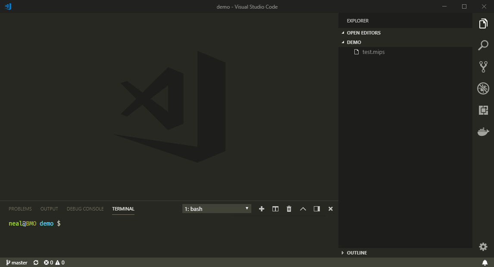

dashmips
python based simulator
Utilizing the awesome power of python decorators I have built a WIP MIPS assembly interpreter called Dashmips. The goal is to create an educational tool for teaching low-level assembly programming in an environment that is easily extensible and completely controlled.
In addition to the python cli tool that 'compiles & runs' MIPS assembly a VSCode extension has been developed to allow for line by line debugging and register value inspection while executing your wonderful MIPS creation.
Bye bye Javascript, sayonara C++, hasta nunca Go. MIPS is the new lang in town!